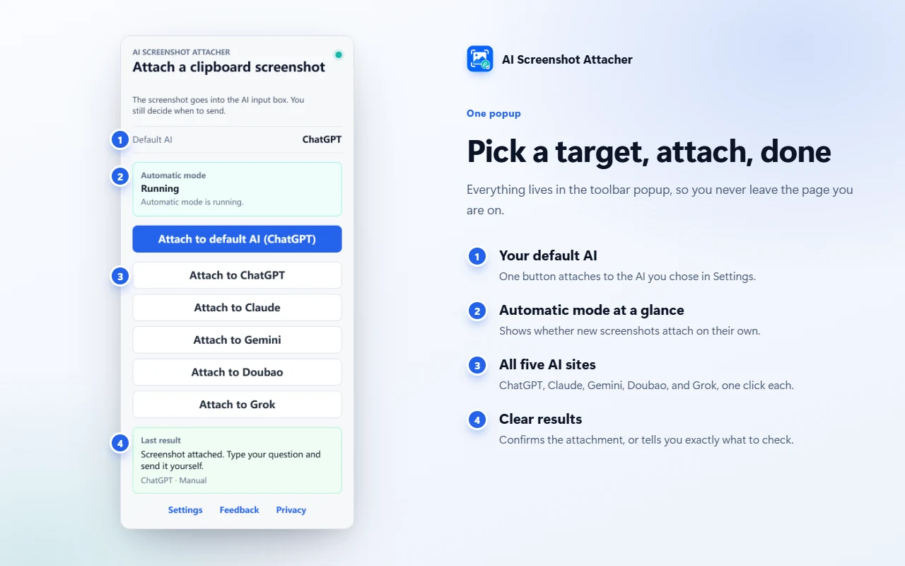
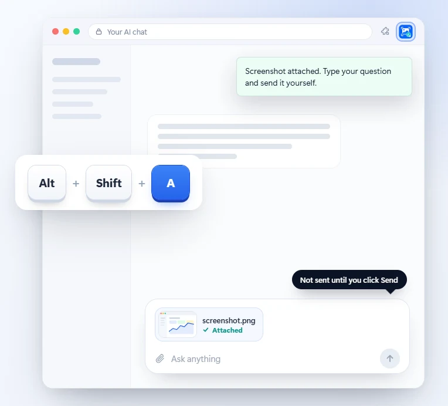
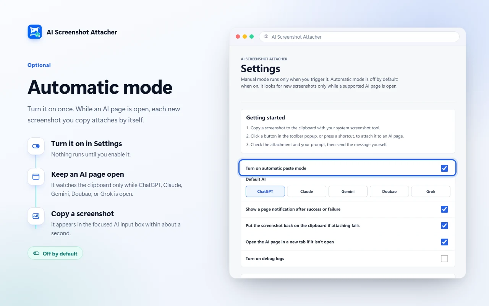
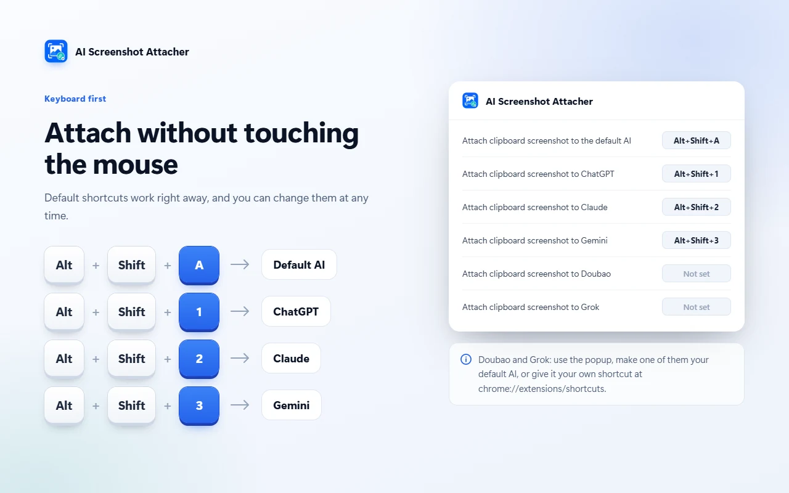
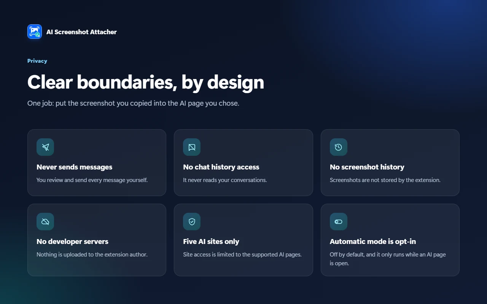
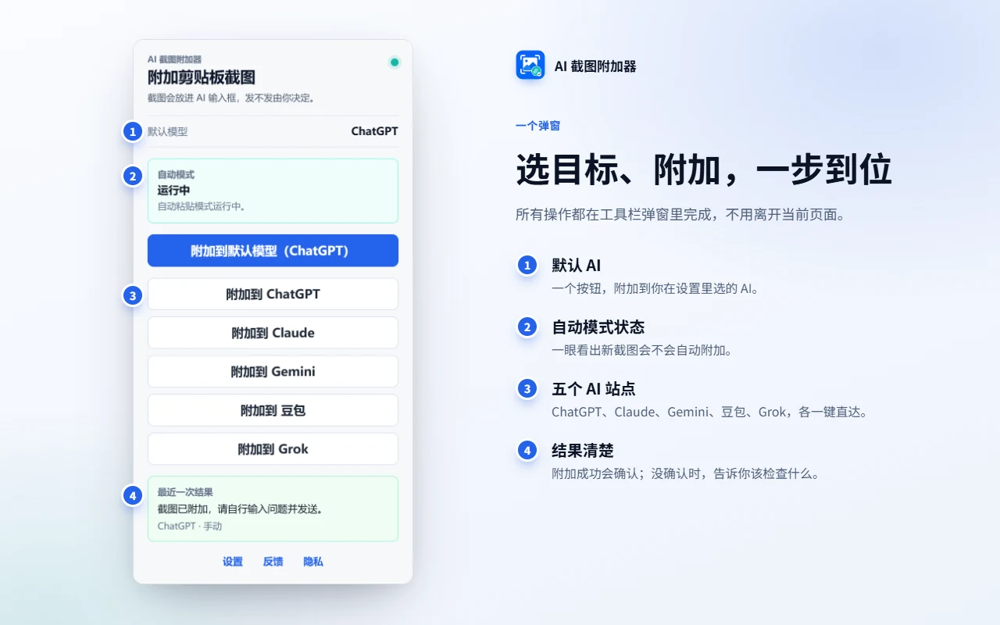
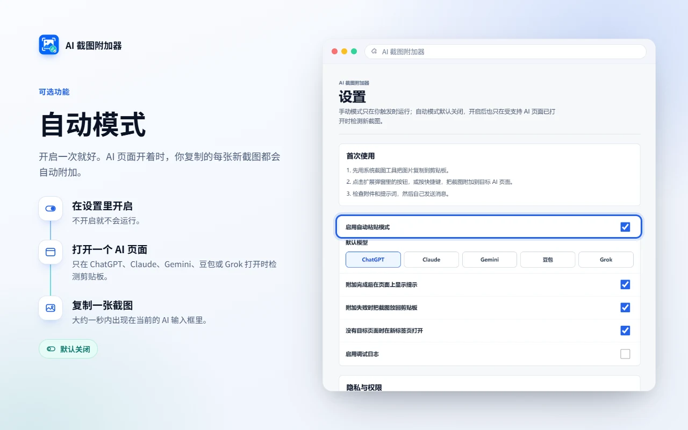

One popup for everything
Attach to your default AI or pick a site, and see whether the attachment was confirmed.
一个弹窗完成全部操作：附加到默认 AI 或任选站点，并能看到附加是否已确认。
Chrome extension · Chrome 扩展
截图，一键放进 AI 对话框
Copy a screenshot and press Alt+Shift+A. It lands in the input box of ChatGPT, Claude, Gemini, Doubao, or Grok, and you still write and send the message yourself.
复制截图后按 Alt+Shift+A，图片就进入 ChatGPT、Claude、Gemini、豆包或 Grok 的输入框；要问什么、何时发送，仍由你决定。


Attach to your default AI or pick a site, and see whether the attachment was confirmed.
一个弹窗完成全部操作：附加到默认 AI 或任选站点，并能看到附加是否已确认。

While an AI page is open, each new screenshot you copy is attached on its own. Off by default.
可选的自动模式：AI 页面开着时，复制的每张新截图都会自动附加。默认关闭。

Alt+Shift+A for your default AI, Alt+Shift+1/2/3 for ChatGPT, Claude, and Gemini.
键盘直达：Alt+Shift+A 附加到默认 AI，Alt+Shift+1/2/3 对应 ChatGPT、Claude、Gemini。

Never sends messages, never reads chat history, and uploads nothing to the developer.
隐私边界清楚：绝不自动发送，不读取聊天记录，也不向开发者上传任何内容。
The interface follows your browser language. 界面会跟随浏览器语言自动切换。


No analytics are included. The extension does not read chat history, does not store screenshot history, and does not send AI messages automatically.
不含任何统计代码。插件不读取聊天记录，不保存截图历史，也不会自动发送 AI 消息。